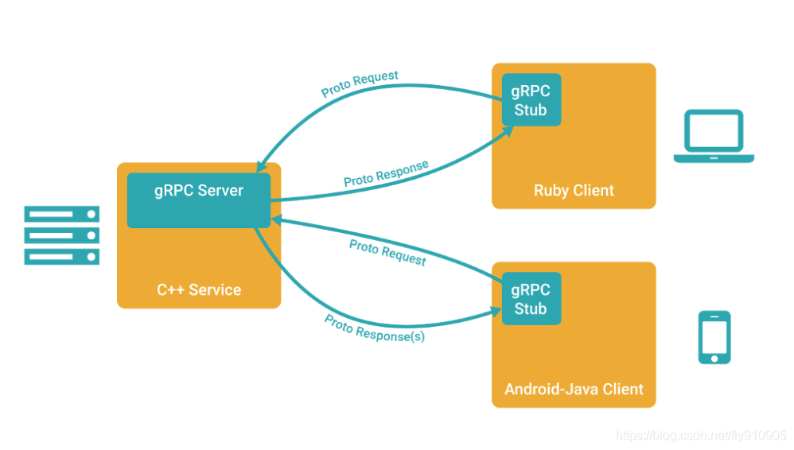

<!DOCTYPE HTML>
<html lang="zh-CN">
<head><meta name="generator" content="Hexo 3.8.0">
    <!--Setting-->
    <meta charset="UTF-8">
    <meta name="viewport" content="width=device-width, user-scalable=no, initial-scale=1.0, maximum-scale=1.0, minimum-scale=1.0">
    <meta http-equiv="X-UA-Compatible" content="IE=Edge,chrome=1">
    <meta http-equiv="Cache-Control" content="no-siteapp">
    <meta http-equiv="Cache-Control" content="no-transform">
    <meta name="renderer" content="webkit|ie-comp|ie-stand">
    <meta name="apple-mobile-web-app-capable" content="我的博客 - blog">
    <meta name="apple-mobile-web-app-status-bar-style" content="black">
    <meta name="format-detection" content="telephone=no,email=no,adress=no">
    <meta name="browsermode" content="application">
    <meta name="screen-orientation" content="portrait">
    <link rel="dns-prefetch" href="https://lives.xtcgch.ink">
    <!--SEO-->

<meta name="description" content="脑容量不够，笔记来凑">


<meta name="robots" content="all">
<meta name="google" content="all">
<meta name="googlebot" content="all">
<meta name="verify" content="all">
    <!--Title-->


<title>RPC原理和使用 | 我的博客 - blog</title>


    <link rel="alternate" href="/atom.xml" title="我的博客 - blog" type="application/atom+xml">


    <link rel="icon" href="https://blog.xtcgch.ink/img/background/海绵宝宝.ico">

    


<link rel="stylesheet" href="/css/bootstrap.min.css?rev=3.3.7">
<link rel="stylesheet" href="/css/font-awesome.min.css?rev=4.5.0">
<link rel="stylesheet" href="/css/style.css?rev=@@hash">


    


    

</head>

</html>
<!--[if lte IE 8]>
<style>
    html{ font-size: 1em }
</style>
<![endif]-->
<!--[if lte IE 9]>
<div style="ie">你使用的浏览器版本过低，为了你更好的阅读体验，请更新浏览器的版本或者使用其他现代浏览器，比如Chrome、Firefox、Safari等。</div>
<![endif]-->

<body>
    <header class="main-header" style="background-image:url(https://blog.xtcgch.ink/img/head-bg.jpg)">
    <div class="main-header-box">
        <a class="header-avatar" href="/" title="unistd68">
            
        </a>
        <div class="branding">
        	<!--<h2 class="text-hide">Snippet主题,从未如此简单有趣</h2>-->
            
                <h2> 脑容量不够，笔记来凑 </h2>
            
    	</div>
    </div>
</header>
    <nav class="main-navigation">
    <div class="container">
        <div class="row">
            <div class="col-sm-12">
                <div class="navbar-header"><span class="nav-toggle-button collapsed pull-right" data-toggle="collapse" data-target="#main-menu" id="mnav">
                    <span class="sr-only"></span>
                        <i class="fa fa-bars"></i>
                    </span>
                    <a class="navbar-brand" href="https://lives.xtcgch.ink">我的博客 - blog</a>
                </div>
                <div class="collapse navbar-collapse" id="main-menu">
                    <ul class="menu">
                        
                            <li role="presentation" class="text-center">
                                <a href="https://blog.xtcgch.ink/"><i class="fa "></i>主页</a>
                            </li>
                        
                            <li role="presentation" class="text-center">
                                <a href="https://blog.xtcgch.ink/categories/原理/"><i class="fa "></i>原理</a>
                            </li>
                        
                            <li role="presentation" class="text-center">
                                <a href="https://blog.xtcgch.ink/categories/代码/"><i class="fa "></i>代码</a>
                            </li>
                        
                            <li role="presentation" class="text-center">
                                <a href="https://blog.xtcgch.ink/categories/开源/"><i class="fa "></i>开源</a>
                            </li>
                        
                            <li role="presentation" class="text-center">
                                <a href="https://blog.xtcgch.ink/categories/面试/"><i class="fa "></i>面试</a>
                            </li>
                        
                            <li role="presentation" class="text-center">
                                <a href="https://blog.xtcgch.ink/categories/其他/"><i class="fa "></i>其他</a>
                            </li>
                        
                            <li role="presentation" class="text-center">
                                <a href="https://blog.xtcgch.ink/archives/"><i class="fa "></i>时间轴</a>
                            </li>
                        
                    </ul>
                </div>
            </div>
        </div>
    </div>
</nav>
    <section class="content-wrap">
        <div class="container">
            <div class="row">
                <main class="col-md-8 main-content m-post">
                    <p id="process"></p>
<article class="post">
    <div class="post-head">
        <h1 id="RPC原理和使用">
            
	            RPC原理和使用
            
        </h1>
        <div class="post-meta">
    
    
    <span class="categories-meta fa-wrap">
        <i class="fa fa-folder-open-o"></i>
        <a href="https://blog.xtcgch.ink/categories/原理">
            原理
        </a>
    </span>
    

    
    <span class="fa-wrap">
        <i class="fa fa-tags"></i>
        <span class="tags-meta">
            
                
                    <a href="https://blog.xtcgch.ink/tags/RPC" title="RPC">
                        RPC
                    </a>
                
            
        </span>
    </span>
    

    
        
        <span class="fa-wrap">
            <i class="fa fa-clock-o"></i>
            <span class="date-meta">2020/12/02</span>
        </span>
        
    
</div>

            
            
    </div>
    
    <div class="post-body post-content">
        <p><strong>摘要：</strong>记录常用的RPC框架原理。</p>
<a id="more"></a>
<hr>
<h1 id="脑图"><a href="#脑图" class="headerlink" title="脑图"></a>脑图</h1><hr>
<h1 id="前言"><a href="#前言" class="headerlink" title="前言"></a><table><tr><td bgcolor="#C7C7C7">前言</td></tr></table></h1><p>RPC 框架的目标就是让远程服务调用更加简单、透明</p>
<p>RPC 框架负责屏蔽底层的传输方式（TCP 或者 UDP）、序列化方式（XML/Json/ 二进制）和通信细节。</p>
<p>服务调用者可以像调用本地接口一样调用远程的服务提供者，而不需要关心底层通信细节和调用过程</p>
<p></p>
<h1 id="常见RPC框架"><a href="#常见RPC框架" class="headerlink" title="常见RPC框架"></a><table><tr><td bgcolor="#C7C7C7">常见RPC框架</td></tr></table></h1><p>业界主流的 RPC 框架整体上分为三类：</p>
<ul>
<li><p>支持多语言的 RPC 框架，比较成熟的有 Google 的 gRPC、Apache（Facebook）的 Thrift；</p>
</li>
<li><p>只支持特定语言的 RPC 框架，例如新浪微博的 Motan；</p>
</li>
<li><p>支持服务治理等服务化特性的分布式服务框架，其底层内核仍然是 RPC 框架, 例如阿里的 Dubbo</p>
</li>
</ul>
<h1 id="gRPC"><a href="#gRPC" class="headerlink" title="gRPC"></a><table><tr><td bgcolor="#C7C7C7">gRPC</td></tr></table></h1><p>  在 gRPC 里客户端应用可以像调用本地对象一样直接调用另一台不同的机器上服务端应用的方法，使得您能够更容易地创建分布式应用和服务。</p>
<p>  与许多 RPC 系统类似，gRPC 也是基于以下理念：定义一个服务，指定其能够被远程调用的方法（包含参数和返回类型）。</p>
<p>  在服务端实现这个接口，并运行一个 gRPC 服务器来处理客户端调用。</p>
<h2 id="gRPC-特点"><a href="#gRPC-特点" class="headerlink" title="gRPC 特点"></a><font color="#0000FF">gRPC 特点</font></h2><ul>
<li><p>语言中立，支持多种语言</p>
</li>
<li><p>基于 IDL ( 接口定义语言（Interface Define Language）)文件定义服务，通过 proto3 工具生成指定语言的数据结构、服务端接口以及客户端 Stub；</p>
</li>
<li><p>通信协议基于标准的 HTTP/2 设计，支持·双向流、消息头压缩、单 TCP 的多路复用、服务端推送等特性，这些特性使得 gRPC 在移动端设备上更加省电和节省网络流量</p>
</li>
<li><p>序列化支持 PB（Protocol Buffer）和 JSON，PB 是一种语言无关的高性能序列化框架，基于 HTTP/2 + PB, 保障了 RPC 调用的高性能</p>
</li>
</ul>
<h2 id="gRPC-原则"><a href="#gRPC-原则" class="headerlink" title="gRPC 原则"></a><font color="#0000FF">gRPC 原则</font></h2><ul>
<li><p><strong>服务而非对象、消息而非引用</strong></p>
<p>促进微服务的系统间粗粒度消息交互设计理念，同时避免分布式对象的陷阱和分布式计算的谬误。</p>
</li>
<li><p><strong>普遍并且简单</strong></p>
<p>该基础框架应该在任何流行的开发平台上适用，并且易于被个人在自己的平台上构建。它在CPU和内存有限的设备上也应该切实可行。</p>
</li>
<li><p><strong>免费并且开源</strong></p>
<p>所有人可免费使用基本特性。以友好的许可协议开源方式发布所有交付件。</p>
</li>
<li><p><strong>互通性</strong></p>
<p>该数据传输协议(Wire Protocol)必须遵循普通互联网基础框架。</p>
</li>
<li><p><strong>通用并且高性能</strong></p>
<p>该框架应该适用于绝大多数用例场景，相比针对特定用例的框架，该框架只会牺牲一点性能。</p>
</li>
<li><p><strong>分层的</strong></p>
<p>该框架的关键是必须能够独立演进。对数据传输格式(Wire Format)的修改不应该影响应用层。</p>
</li>
<li><p><strong>负载无关的</strong></p>
<p>不同的服务需要使用不同的消息类型和编码，例如protocol buffers、JSON、XML和Thrift，协议上和实现上必须满足这样的诉求。类似地，对负载压缩的诉求也因应用场景和负载类型不同而不同，协议上应该支持可插拔的压缩机制。</p>
</li>
<li><p><strong>流</strong></p>
<p>存储系统依赖于流和流控来传递大数据集。像语音转文本或股票代码等其它服务，依靠流表达时间相关的消息序列。</p>
</li>
<li><p><strong>阻塞式和非阻塞式</strong></p>
<p>支持异步和同步处理在客户端和服务端间交互的消息序列。这是在某些平台上缩放和处理流的关键。</p>
</li>
<li><p><strong>取消和超时</strong></p>
<p>有的操作可能会用时很长，客户端运行正常时，可以通过取消操作让服务端回收资源。当任务因果链被追踪时，取消可以级联。客户端可能会被告知调用超时，此时服务就可以根据客户端的需求来调整自己的行为。</p>
</li>
<li><p><strong>Lameducking</strong></p>
<p>服务端必须支持优雅关闭，优雅关闭时拒绝新请求，但继续处理正在运行中的请求。</p>
</li>
<li><p><strong>流控</strong></p>
<p>在客户端和服务端之间，计算能力和网络容量往往是不平衡的。流控可以更好的缓冲管理，以及保护系统免受来自异常活跃对端的拒绝服务(DOS)攻击。</p>
</li>
<li><p><strong>可插拔的</strong></p>
<p>数据传输协议(Wire Protocol)只是功能完备API基础框架的一部分。大型分布式系统需要安全、健康检查、负载均衡和故障恢复、监控、跟踪、日志等。实现上应该提供扩展点，以允许插入这些特性和默认实现。</p>
</li>
<li><p><strong>API扩展</strong></p>
<p>可能的话，在服务间协作的扩展应该最好使用接口扩展，而不是协议扩展。这种类型的扩展可以包括健康检查、服务内省、负载监测和负载均衡分配。</p>
</li>
<li><p><strong>元数据交换</strong></p>
<p>常见的横切关注点，如认证或跟踪，依赖数据交换，但这不是服务公共接口中的一部分。部署依赖于他们将这些特性以不同速度演进到服务暴露的个别API的能力。</p>
</li>
<li><p><strong>标准化状态码</strong></p>
<p>客户端通常以有限的方式响应API调用返回的错误。应该限制状态代码名字空间，使得这些错误处理决定更清晰。如果需要更丰富的特定域的状态，可以使用元数据交换机制来提供。</p>
</li>
</ul>
<h2 id="gRPC-使用"><a href="#gRPC-使用" class="headerlink" title="gRPC 使用"></a><font color="#0000FF">gRPC 使用</font></h2>
    </div>
    
    <div class="post-footer">
        <div>
            
        </div>
        <div>
            
        </div>
    </div>
</article>

<div class="article-nav prev-next-wrap clearfix">
    
        <a href="/2020/12/02/GCC和G++的编译/" class="pre-post btn btn-default" title="GCC和G++的编译">
            <i class="fa fa-angle-left fa-fw"></i><span class="hidden-lg">上一篇</span>
            <span class="hidden-xs">GCC和G++的编译</span>
        </a>
    
    
        <a href="/2020/12/01/protobuf的使用/" class="next-post btn btn-default" title="protobuf的使用">
            <span class="hidden-lg">下一篇</span>
            <span class="hidden-xs">protobuf的使用</span><i class="fa fa-angle-right fa-fw"></i>
        </a>
    
</div>


    <div id="comments">
        
    
    <div id="vcomments" class="valine"></div>
    <script src="//cdn1.lncld.net/static/js/3.0.4/av-min.js"></script>
<script src="/assets/valine.min.js"></script>

    <script>
        new Valine({
            av: AV,
            el: '#vcomments',
            appId: 'XWA5gq7VCJybw7YQhf5HG20r-gzGzoHsz',
            appKey: '8FW1WEwrysHXaUD1bhGn2Rp8',
            placeholder: '说点什么吧',
            notify: true,
            verify: false,
            avatar: 'https://blog.xtcgch.ink/img/comment-avatar.jpg',
            meta: 'nick,mail'.split(','),
            pageSize: '10',
            path: window.location.pathname,
            lang: 'zh-CN'.toLowerCase()
        })
    </script>


    </div>


                </main>
                
                    <aside id="article-toc" role="navigation" class="col-md-4">
    <div class="widget">
        <h3 class="title">文章目录</h3>
        
            <ol class="toc"><li class="toc-item toc-level-1"><a class="toc-link" href="#脑图"><span class="toc-text">脑图</span></a></li><li class="toc-item toc-level-1"><a class="toc-link" href="#前言"><span class="toc-text">前言</span></a></li><li class="toc-item toc-level-1"><a class="toc-link" href="#常见RPC框架"><span class="toc-text">常见RPC框架</span></a></li><li class="toc-item toc-level-1"><a class="toc-link" href="#gRPC"><span class="toc-text">gRPC</span></a><ol class="toc-child"><li class="toc-item toc-level-2"><a class="toc-link" href="#gRPC-特点"><span class="toc-text">gRPC 特点</span></a></li><li class="toc-item toc-level-2"><a class="toc-link" href="#gRPC-原则"><span class="toc-text">gRPC 原则</span></a></li><li class="toc-item toc-level-2"><a class="toc-link" href="#gRPC-使用"><span class="toc-text">gRPC 使用</span></a></li></ol></li></ol>
        
    </div>
</aside>

                
            </div>
        </div>
    </section>
    <footer class="main-footer">
    <div class="container">
        <div class="row">
        </div>
    </div>
</footer>

<a id="back-to-top" class="icon-btn hide">
	<i class="fa fa-chevron-up"></i>
</a>


    <div class="copyright">
    <div class="container">
        <div class="row">
            <div class="col-sm-12">
                <div class="busuanzi">
    
</div>

            </div>
            <div class="col-sm-12">
                <span>Copyright &copy; 2018
                </span> |
                <span>
                    Powered by <a href="//hexo.io" class="copyright-links" target="_blank" rel="nofollow">Hexo</a>
                </span> |
                <span>
                    Theme by <a href="//github.com/shenliyang/hexo-theme-snippet.git" class="copyright-links" target="_blank" rel="nofollow">Snippet</a>
                </span>
            </div>
        </div>
    </div>
</div>


<script src="/js/app.js?rev=@@hash"></script>

</body>
</html>